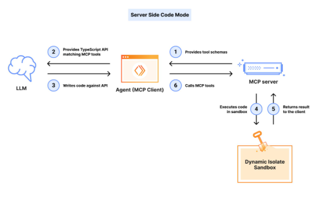

Architecture & Intelligence Artificielle
Code Mode : une nouvelle approche pour réduire l’occupation de la fenêtre de contexte des agents IA lorsqu’ils utilisent des outils

Les agents IA peuvent aujourd’hui se connecter à de nombreux outils et services. Mais plus leurs capacités augmentent, plus une question devient importante : comment leur donner accès à ces outils sans encombrer inutilement leur contexte ?
Le Model Context Protocol (MCP) facilite la communication entre les applications d’intelligence artificielle et les outils ou données externes. Il fournit un cadre commun pour permettre à un modèle d’utiliser des capacités exposées par des serveurs.
Mais lorsqu’un serveur expose un très grand catalogue d’opérations, transmettre toutes leurs descriptions au modèle peut devenir coûteux en tokens et occuper une part importante de sa fenêtre de contexte.
Code Mode : une autre façon d’utiliser les outils
C’est le problème auquel s’intéresse Code Mode, une approche mise en avant par Cloudflare. Plutôt que de présenter individuellement un très grand nombre d’opérations au modèle, l’architecture décrite par Cloudflare s’appuie notamment sur deux capacités :
-
search()pour découvrir les opérations pertinentes ; -
execute()pour exécuter du code capable de combiner ces opérations.
Le modèle peut ainsi récupérer les interfaces dont il a besoin, écrire un script qui enchaîne plusieurs opérations, puis faire exécuter ce script dans un environnement isolé. Les instructions du script s’exécutent sans qu’un appel au modèle soit nécessaire pour chacune d’elles.
Qu’est-ce que cela change pour MCP ?
MCP reste le protocole de communication. Code Mode ne le remplace pas : il propose une autre manière de découvrir et d’orchestrer les capacités mises à disposition par les outils.
L’intérêt est notamment de limiter les descriptions d’outils et les résultats intermédiaires transmis au modèle, tout en permettant de regrouper plusieurs opérations dans une même exécution.
Un chiffre à retenir : dans un benchmark présenté par Cloudflare, l’approche Code Mode représente environ 1 000 tokens, contre plus d’un million pour les descriptions complètes de son vaste catalogue d’API. Ce résultat dépend du scénario et ne constitue pas une économie garantie pour toutes les architectures.
Une piste que je vais mettre à l’épreuve
Cette approche mérite d’être étudiée au-delà de la démonstration. Je vais justement la tester dans VS Code, comparer une utilisation classique de MCP à une architecture intégrant Code Mode, puis observer les différences de consommation, de coût, de latence et de qualité des résultats.
Car utiliser l’IA ne consiste pas uniquement à obtenir un résultat. Il faut aussi comprendre les ressources mobilisées pour y parvenir et chercher le bon équilibre entre performance, coût et fiabilité.
Pour aller plus loin : Cloudflare explique cette approche dans son article technique : Code Mode: give agents an entire API in 1,000 tokens . L'article présente notamment comment accéder à plus de 2 500 endpoints avec seulement deux outils et environ 1 000 tokens dans le contexte.
Vous vous intéressez aux architectures d’agents IA ?
Je partagerai les enseignements de ces expérimentations au fur et à mesure des tests.
Échanger avec moi